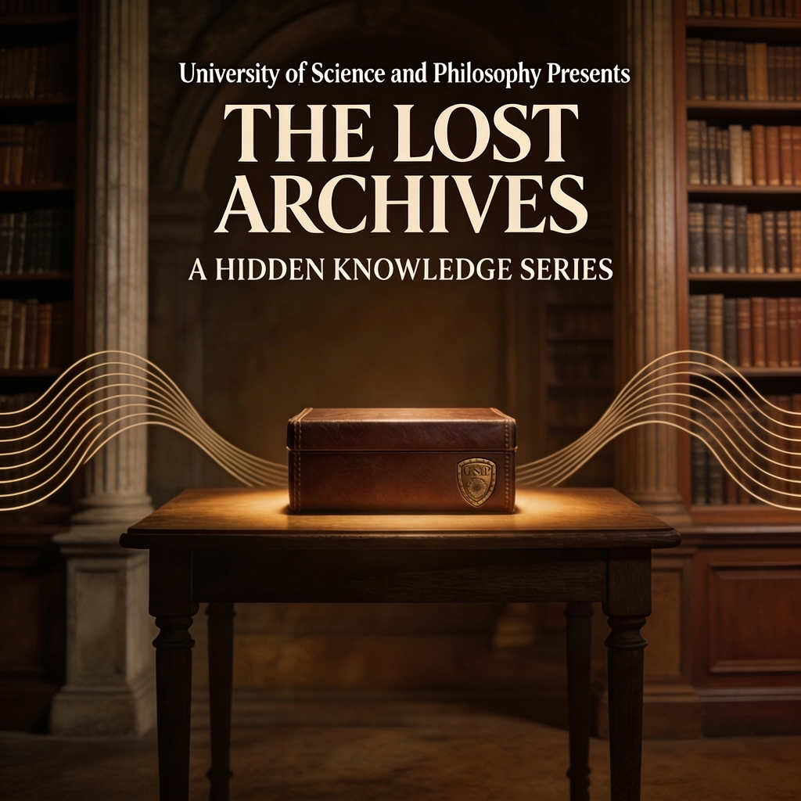
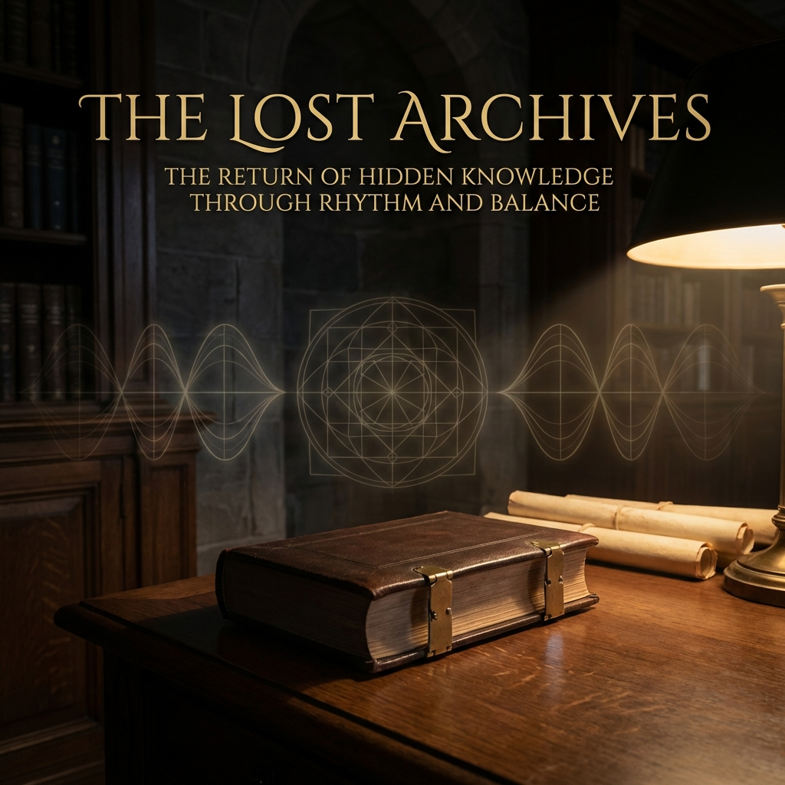
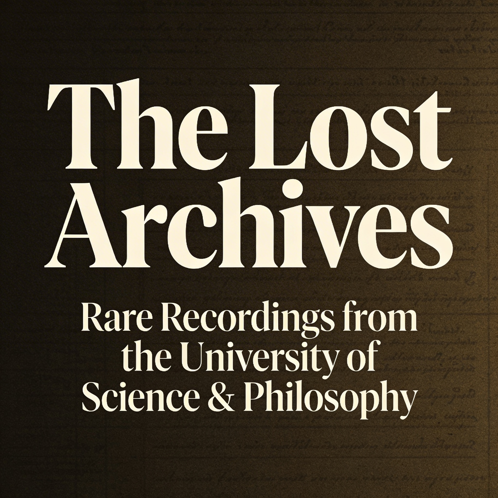

University of Science & Philosophy Presents
Rare Recordings from the University of Science & Philosophy
"The Lost Archives brings rare and rediscovered recordings from the University of Science and Philosophy back into the world, revealing voices, teachings, and ideas too important to remain hidden."
www.thelostarchives.com
The strategic foundation is now in place, and the project is moving from concept into visible execution.
These two early directions are meant to help align on the right visual spirit for the project before the full system is refined.

Series Cover

Atmospheric Direction

Editorial Direction
Option A
A more type-led, museum-poster direction: restrained, premium, and instantly recognizable.
Option B
A more archival and mood-led direction: rare, serious, and carefully brought back into view.